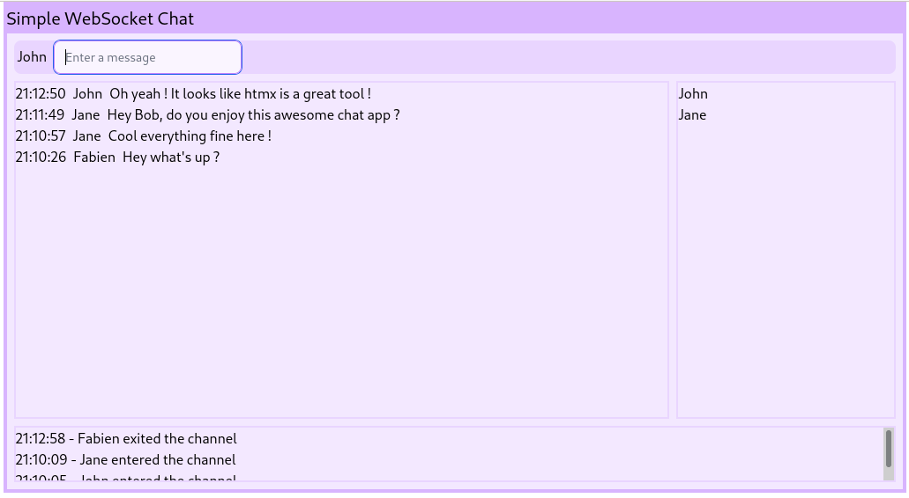

The CRC (Red Hat CodeReady Containers) is a solution to deploy OpenShift cluster on your local machine in minutes. Red Hat OpenShift provides a complete solution that includes a stable Kubernetes engine with robust security and many integrated capabilities required to operate a complete …
As the infra team we deploy and maintain a Quay service which is a distributed and highly available container image registry for the RDO and TripleO project. In the blog post we'll introduce an Ansible role that we have created to ease Quay deployment and configuration.
Below are the tasks we worked on during our last sprint.
Below are the tasks we worked on during our last sprint.
Below are the tasks we worked on during our last sprint.
Below are the tasks we worked on during our last sprint.
This blog post explains the reasons we integrated an effect system in Monocle. This post aims to be beginner friendly. We understand that some concepts sound intimidating and we hope that this post demystifies them a bit.
First …
more ...This post aims to introduce htmx usage through a very simple chat application. We'll expose and explain some code snippets from a playground project named simple chat.
The playground application is written in Haskell but htmx usage is …
more ...Below are the tasks we worked on during our last sprint.